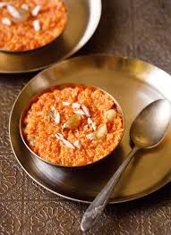

Gajar ka Halwa

Ingredients
- 6-8 medium-sized carrots (preferably tender and sweet varieties like Red or Desi carrots)
- 2 cups full-fat milk
- 1/2 cup sugar (adjust to taste)
- 3 tbsp ghee (clarified butter)
- 1/4 cup chopped nuts (cashews, almonds, and pistachios)
- 1/4 tsp cardamom powder (or to taste)
- 1 tbsp golden raisins (optional)
- 1/2 tsp saffron strands (optional, for color and flavor)
- A pinch of nutmeg (optional)
Steps
- Peel and grate the carrots using a fine grater or food processor. You need about 4 cups of grated carrots.
- In a heavy-bottomed pan, add the grated carrots and milk. Cook on medium heat, stirring occasionally.
- Allow the mixture to simmer until the carrots soften and the milk reduces to almost half (this may take around 25-30 minutes).
- Add the sugar, cardamom powder, and saffron strands (if using). Stir well and continue to cook on low heat, letting the sugar melt and mix evenly.
- Heat ghee in a separate pan, and fry the chopped nuts and raisins until golden. Set aside.
- Once the milk has reduced, and the mixture is thick, add the fried nuts and raisins to the halwa. Stir everything together.
- Cook for another 5-10 minutes until the mixture thickens further and the ghee separates from the halwa.
- Serve warm or chilled, garnished with extra nuts or dry fruits as desired.